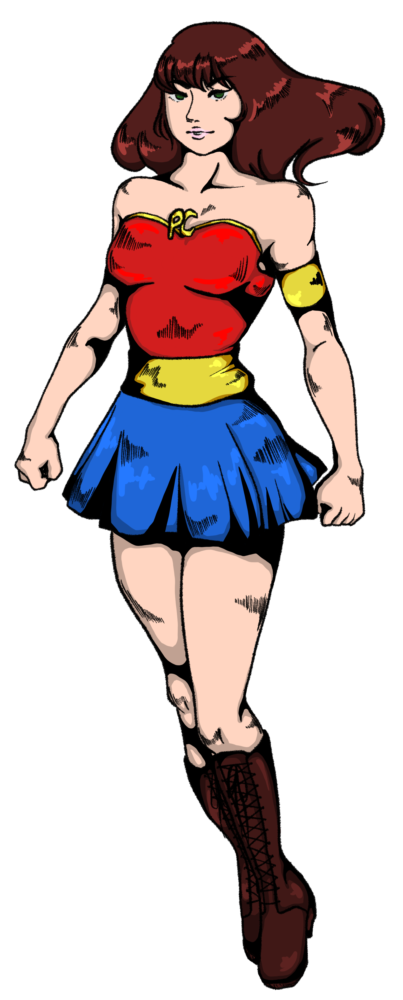
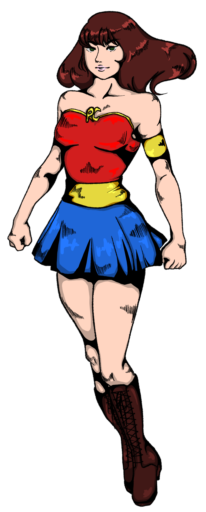

C'EST TOI LE HEROS !
Réveille le héros qui est en toi ! Sauve tes proches et l’environnement en réparant leurs appareils électroniques en panne et affronte tes amis dans ce défi.
Réveille le héros qui est en toi ! Sauve tes proches et l’environnement en réparant leurs appareils électroniques en panne et affronte tes amis dans ce défi.
Gagne des points en aidant tes proches qui ont des problèmes informatiques avec leurs appareils.
En aidant tes proches, tu allonge la
durée de vie de leurs appareils. Ce
faisant, tu te places à contre
courant de la production massive
d’appareils neufs, coûteuse pour
l’environnement.


Etape 1
Etape 2
Etape 3

Co2
économisé
Héros

Appareils
sauvés
Fixlig est une communauté d’amateurs qui réparent ou optimisent les outils informatiques de leurs proches. Véritables héros, ils contribuent ainsi à l’allongement de la durée de vie de ces appareils, et donc à la lutte contre les désastres sociaux et
environnementaux provoqués par la production massive d’appareils neufs.
Fixlig te permet de défier tes amis pour savoir qui sera le meilleur réparateur de ton entourage. Tu gagnes des points quand
tu aides tes proches.
Chaque fois que tu arrives à résoudre un problème informatique de l’un de tes proches, tu gagnes un point.
Je signale à la plateforme que j’ai effectué une tâche.
Je renseigne l’adresse email de la personne que j’ai aidé.
Elle reçoit un lien cliquable pour confirmer qu’elle a bénéficié de mon aide.
Dès que le bénéficiaire
clique sur le lien, mon intervention est validée.
Tu pourras ajouter tes amis à ton réseau afin de les affronter pour savoir lequel d’entre vous est le meilleur fixer. Chaque mois, le meilleur recevra le badge de héros du mois.
Le badge de héros du mois sera attribué à la personne qui aura aidé le plus de proches, c’est-à-dire qui aura reçu le plus de points.
Oui. Il existe plusieurs badges selon les services que tu a effectué.